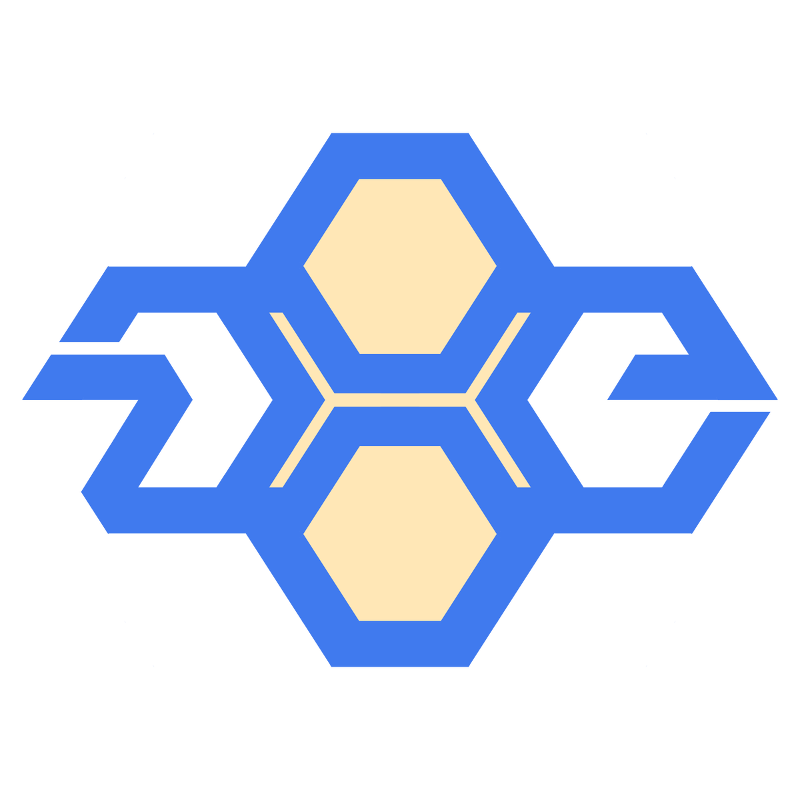

NAPIOREO
「NAPI × 蜂の巣」design concept
「NAPI × 蜂の巣」
今回のロゴは、NAPIという名前と蜂の巣をコンセプトにしたデザインです。NAPIの頭文字がロゴの中央に配置され、その周りに蜂の巣のような幾何学的なパターンが広がっています。蜂の巣は組織と協力の象徴であり、NAPIが取り組む活動の共同作業と連帯を表しています。ロゴのカラーパレットは、温かみのあるオレンジや黄色を基調に、蜂の活動と関連性のある黒や白が用いられています。このデザインは、NAPIのブランドイメージを強化し、生態系や環境保護に対する取り組みを視覚的に表現しています。
thought
コンセプトを形に
コンセプトを形にした考え方をご紹介。